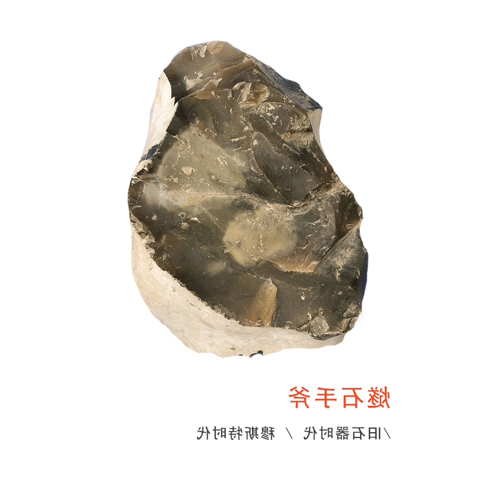

石器时代
我们大概都听过“石器时代”这个名词。石器时代标志着人类文明文明萌芽的最初阶段，
因为这个阶段非常漫长，严格的考古学家又把它再分为旧石器时代、中石石器时代和
新石器时代。石器时代和我们要讨论的美术有什么关系呢？
我们试着来观察一件旧石器时代的“燧石手斧”。这快手斧看起来和一块普通的石头
没什么差别，但是，如果仔细观察，会发现上面留着一些敲打过的痕迹。
是的，我们的美术史就要从这些痕迹谈起。
1

痕迹
动物会不会在自然界留下痕迹？当我们询问这个问题的时候，就会想到鸟类在树上筑造它们的巢，
蜜蜂或蚂蚁也会用泥土一类的物质来营建它们居住的窝。利用大自然的某一种物质去营造一种形状，
是美术创造的领域应当关心的生物行为。这种行为在动物的世界已经存在。
但是，这种行为在人类的世界在高度活跃起来。例如说，在一百万年当中，鸟类筑巢的行为，
蜜蜂或蚂蚁造窝的行为，基本上没有太大的改变……
返回书库
2